第八单元
近代经济、社会生活与教育文化事业的发展
从晚清到民国，伴随着外来文化的冲击和社会政局的更替，中国的经济、社会生活、教育文化事业等各个方面都发生了巨大变化。
民族资本主义产生了，民族工业在恶劣的生存环境中艰难成长。西方的文化、器物大量涌入，深刻改变了中国人的生产方式和生活方式。近代教育和新闻出版业获得长足进步。在文艺创作上，涌现出一大批优秀作品。
第 25 课
经济和社会生活的变化
教材第 120 页 · PDF 第 125 页查看原书页面
近代以来，中国经济和社会生活发生了重大变革。中国近代民族工业为什么会在第一次世界大战期间出现“短暂的春天”？火车、轮船、电车等新式交通工具是如何引入中国的？旗袍、中山装是怎样出现并风靡一时的？
民族资本主义的发展
19 世纪六七十年代，中国民族资本主义产生。甲午中日战争后，外国人纷纷在华开办工厂、开采矿山，刺激了中国民族工业的发展。状元实业家张謇主动放弃高官厚禄，毅然回到家乡创办大生纱厂，带动了很多中国人走上“实业救国”道路。
张謇是江苏南通人，清末状元。甲午战败后，他抱着“实业救国”的思想，创办大生纱厂，获利颇丰。除纱厂外，张謇还创办了垦牧公司、轮船公司、面粉厂、油料厂和冶铁厂等产业。他把挣来的钱用于兴办文化和公益事业，创立了学校、图书馆、博物苑、气象台、医院、公园和剧场等机构，有些在国内还是首创的，如1905年创办的南通博物苑就是中国历史上最早的博物馆。
相关史事
教材第 121 页 · PDF 第 126 页查看原书页面
辛亥革命后，中华民国临时政府颁布了一系列奖励发展实业的法令，各种实业团体纷纷涌现，人们竞相投资设厂，海外华侨也归国创业，掀起了发展实业的热潮。
第一次世界大战期间，西方列强忙于欧洲战事，暂时放松了对中国的经济侵略，中国民族工业获得了迅速发展的良机，出现了“短暂的春天”。其中发展最快的是纺织业和面粉业。第一次世界大战后，帝国主义经济势力卷土重来，民族资本主义发展再度受挫。
随着国民党官僚资本的建立和扩张，民族工业除了受帝国主义和封建主义的双重压迫外，还遭到官僚资本主义的摧残。内忧外患的危机，严重阻碍着民族工业的正常发展。处于夹缝中的民族工业在恶劣的生存环境中顽强地挣扎着，出现了荣氏兄弟、卢作孚、侯德榜等著名企业家。
中国近代民族工业虽然有了长足的发展，但总的来说还比较落后。它们资金少，规模小，技术差，而且主要集中在轻工业部门，重工业基础极为薄弱。地区分布也极不平衡，主要集中在上海、武汉等沿海沿江的大城市。
你能以荣氏企业为例，说说近代民族工业兴衰的社会原因吗？
相关史事
荣宗敬和荣德生兄弟利用第一次世界大战期间的“短暂的春天”，建立起以纺织业和面粉业为主的庞大家族企业。九一八事变后，北方面粉市场被日本侵占，日本的棉纱也在华大量倾销，荣氏企业陷入困境。当它历经艰险渡过难关后不久，又遭到日本侵华战火的洗劫，企业遭受重创，荣宗敬忧愤而死。抗战胜利后，荣氏企业虽然有所恢复，但国民党发动的内战再次使它陷入生存危机。
教材第 122 页 · PDF 第 127 页查看原书页面
社会生活的变化
19 世纪70 年代以后，西方发明的火车、轮船、电车、汽车、飞机等新式交通工具相继传入中国。新式交通工具的引入，方便了人们的出行，促进了商品的流通。近代铁路和公路的修筑，水上、空中航线的开辟，新式马路的修建，传统街道的改造，近代交通管理和通信事业的发展，逐渐改变了人们的生产方式和生活方式。
伴随着社会经济与文化的发展，人们的生活方式和风俗习惯也开始发生深刻变化。辛亥革命后，民国政府颁布了剪辫、易服和劝禁缠足等革除社会陋俗的法令，强令男子剪掉辫子，劝禁女子缠足；废除有损人格的跪拜礼，代之以简单的鞠躬、握手礼；取消“老爷”“大人”的称谓，代之以“先生”的称呼，体现出自由平等的新风尚。
2 0 世纪3 0 年代，我国迫切需要在钱塘江上修建一座大桥，连接浙赣铁路与沪杭铁路，打通南北铁路干线。当时，国内的跨江大桥基本都是由外国人设计建造的。曾留学美国，后来回国任教的桥梁专家茅以升，接受了造桥任务。他带领工程团队，充分发挥聪明才智，解决了一系列技术难题，终于在1937年建成了钱塘江大桥。这是当时中国自行设计、建造的第一座双层公路、铁路两用桥。
相关史事
教材第 123 页 · PDF 第 128 页查看原书页面
上海南京路上的行人然而，近代中国社会生活的变化是不平衡的。沿海地区的变化，大于内陆地区的变化；东南各省的变化，大于西北各省的变化；大中城市的变化，大于广大乡镇的变化；
受过教育和教育程度较高的民众的变化，大于没有受过教育或教育程度较低的民众的变化。从总体上看，近代社会生活的变化，呈现出新旧并呈、多元发展的特征。
人们的饮食、服饰、婚丧以及休闲娱乐方式日益开放，出现了崇洋逐新的趋向。西餐、西式蛋糕、洋酒、洋烟、洋布在沿海城市成为时尚，文明结婚、集体婚礼、公葬、追悼会等新式婚丧礼节纷纷出现，公园、咖啡馆也在大都市风行一时。在时装、烫发流行之际，旗袍、中山装等具有民族风情的服装也受人青睐。
相关史事
旗袍原来是满族妇女的基本服装，特点是袍身宽大、线条平直，下长至足，呈直筒式，领、袖、襟、裙有宽阔的花边。20世纪20年代，旗袍吸收欧美服装讲求适体和曲线美的优点，款式发生了重大变革。开始是袖口缩小，滚边变窄，后来逐渐缩短长度，收紧腰身。旗袍样式不断翻新，袖子越改越短，直到取消袖子，露出肩部；领子由高领至低领，越低越时髦，甚至出现无领旗袍。这种经过改良的旗袍，充分体现了女子的曲线美，在上海出现后，很快便流行全国。
教材第 124 页 · PDF 第 129 页查看原书页面
课后活动
1．毛泽东说：讲到重工业不能忘记张之洞，讲到轻工业不能忘记张謇。你知道哪些张之洞、张謇创办近代民族工业的故事？
2．列举近代以来中国社会生活变化的三项内容，想一想这些内容在你现在的生活中有什么表现。
知识拓展
中国近代铁路之父——詹天佑
1905年，清政府决定自主修筑京张铁路。西方工程师们抱着观望与嘲笑的态度，讥讽说：“中国造此路之工程师尚未诞生。”担任京张铁路总工程师的詹天佑，是中国派遣的第一批留学生之一。在修建京张铁路时，他精心勘测、设计、施工，不仅提前竣工，而且实现了“花钱少，质量好，完工快”的既定目标。
1909年10月2日，京张铁路在南口举行盛大的通车典礼。这条铁路是以詹天佑为首的中国工程技术人员与中国工人，用自己的技术力量，由中国筹款，独立自主建成的第一条铁路干线。
詹天佑的事迹传遍了全国，也震动了西方工程科技界。1909年，他被美国土木工程师学会选为正式会员，成为第一位加入此会的中国工程师。
青龙桥站西“人”字形轨道上下行车的情景
第 26 课
教育文化事业的发展
教材第 125 页 · PDF 第 130 页查看原书页面
教育、新闻出版乃至文学艺术，越来越深刻地影响着人们的日常生活。中国近代新式教育制度是在废除科举的基础上发展起来的，你对此知道多少？近代以来有哪些主要的新闻出版机构？五四前后中国现代文艺创作取得了哪些成就？
教育、新闻出版业的发展
洋务运动时期，洋务派先后兴办了同文馆、福州船政学堂等一批新式学校。甲午战争后，清政府先后在天津创办北洋西学堂①， 在上海创办南洋公学。百日维新期间，清政府又决定创办京师大学堂。
1901 年，清政府以科举流弊太多，决定从次年开始，废除八股文。1903 年，又以科举阻碍学校发展，决定逐步废除科举制。1905 年，清政府谕令一律停止科举考试，存在约1 300 年的科举制度至此寿终正寝。与此同时，清政府还通令兴办学堂，颁布各级学堂章程，统一全国学制。中国近代新式教育逐渐发展起来。
鸦片战争后，外国人在上海、香港等地创办了许多供在华外国人阅读的外文报刊。1872 年在上海创办的《申报》，是近代中国存在时间最长的中文报纸。天津的《大公报》、上海的《新闻报》和延
教材第 126 页 · PDF 第 131 页查看原书页面
安的《解放日报》，是民国时期的著名报纸。上海的《东方杂志》、陈独秀创办的《新青年》和邹韬奋主办的《生活》周刊，是民国时期影响较大的刊物。
这些新式报刊，报道各地发生的重大事件，分析国内外时局。它们报道及时，覆盖面广，深刻影响着人们的日常生活。
1897 年在上海创办的商务印书馆，是近代中国人创办的第一个也是规模最大的文化出版机构。它编辑出版多种中小学教科书、字典和大批文化学术著作，促进了文化事业的发展。此外，中华书局、开明书店、生活书店等，也是当时有影响的出版机构。中国共产党在根据地创办的新华书店，成为出版发行进步书刊的重要阵地。
教材第 127 页 · PDF 第 132 页查看原书页面
齐白石擅绘花鸟草虫，画法上工笔、写意兼长，造诣精深。徐悲鸿熟悉中西画法，并以西洋写实主义的技法来改革中国画法，创作了《田横五百士》《愚公移山》等鸿篇巨制，在中国画技法和意境上开辟了新时代。
材料研读
我翻开历史一查，这历史没有年代，歪歪斜斜的每叶①上都写着“仁义道德”几个字。我横竖睡不着，仔细看了半夜，才从字缝里看出字来，满本都写着两个字是“吃人”！
—鲁迅《狂人日记》
请谈谈你对这段话含义的理解。
文学艺术的成就
20 世纪初以后，中国文艺创作空前繁荣，成就突出，涌现出一批优秀作品。其中比较著名的有：鲁迅的《狂人日记》《阿Q正传》 、郭沫若的《女神》、茅盾的《子夜》、曹禺的《雷雨》、巴金的《家》、老舍的《骆驼祥子》、徐悲鸿的《愚公移山》等。
鲁迅的白话小说《狂人日记》，无情批判吃人的封建礼教，成为一篇讨伐封建主义的檄文。他的《阿Q正传》， 深刻解剖了整个民族的精神弱点，成为批判国民性问题的经典之作。鲁迅的杂文思想深刻，语言犀利，是中国文学史上的辉煌篇章。
教材第 128 页 · PDF 第 133 页查看原书页面
在中国共产党的推动下，革命文艺蓬勃发展。在抗日救亡运动的洪流中，聂耳创作了《义勇军进行曲》《毕业歌》等名曲，谱写了时代的最强音。其中由田汉作词的《义勇军进行曲》，后来被定为中华人民共和国国歌。冼星海在延安作曲的《黄河大合唱》气势磅礴，表现出中华民族的伟大、独立、坚强，体现了中国人民的勇敢、顽强和百折不挠的拼搏精神。1942 年，毛泽东在延安文艺座谈会上发表重要讲话，提出文艺为工农兵服务的方针。解放区的文艺工作者深入工农群众，创造出一批优秀文艺作品，如赵树理的《小二黑结婚》《李有才板话》、丁玲的《太阳照在桑干河上》、周立波的《暴风骤雨》等小说。
赵丹、周璇等家喻户晓的电影明星，为人们留下了《十字街头》《马路天使》《渔光曲》等经典影片，丰富了人们的精神生活，也留下许多珍贵的历史镜头。
相关史事
1905年，适逢京剧表演艺术家谭鑫培寿辰，北京丰泰照相馆老板任庆泰忽然触发了拍摄中国人自己电影的灵感。他将谭鑫培主演的《定军山》的若干片段拍摄成电影。这部电影在前门大观楼放映时， 受到广大观众的热烈欢迎。百代公司为谭鑫培灌制了七张半唱片，留下了极其珍贵的艺术资料。
大型歌剧《白毛女》也影响很大。
20 世纪初，西方发明的电影传入中国。早期的电影只有影像，没有声音，称为无声电影。中国自己拍摄的第一部无声电影是1905 年拍摄的京剧《定军山》，第一部有声电影是1931 年拍摄的《歌女红牡丹》。
教材第 129 页 · PDF 第 134 页查看原书页面
知识拓展
保持民族气节的艺术老人—齐白石
齐白石是木匠出身的民间画师，经过辛勤努力，终于成为独树一帜的国画艺术大师。
日军占领北平后，70多岁的齐白石闭门谢客。他在大门上贴了一张纸条：“白石老人心病复作，停止见客。”尽管如此，日伪汉奸仍不断前去骚扰。齐白石在大门上贴上“停止卖画”，表现了这位艺术老人的民族气节。恼怒的日伪汉奸没收了他的存款，扰乱他的画室。但齐白石没有被吓倒。他借画抒发自己的苦闷与义愤。他在《群鼠图》上题句：“群鼠群鼠，何多如许！何闹如许！既啮我果，又剥我黍。”他又在《螃蟹》上题诗：“处处草泥乡，行到何方好！昨岁见君多，今年见君少。”
课后活动
1．连线。
《申报》一篇讨伐封建主义的檄文《狂人日记》中国拍摄的第一部无声电影《定军山》近代中国存在时间最长的中文报纸
2．学唱《义勇军进行曲》和《黄河大合唱》，体会它们共同反映的时代主题。
第 27 课
活动课：考察近代历史遗迹
教材第 130 页 · PDF 第 135 页查看原书页面
百年近代历程，中国社会发生了全方位的深刻变化，开始了从传统农耕文明向现代工业文明的转型。随之而来的是生产方式的改变、社会制度的变革等，人们的思想观念、生活方式也开始从封闭和僵化走向开放和多元。建筑是凝固的历史，承载和记录了许多历史信息，让我们走近它们，了解这里发生过的一切……
活动目的
了解家乡与近代中国有关的建筑物、纪念馆等历史遗迹，感受近代中国历史。
活动内容
我们生活的地方都不是世外桃源，历史发展进步的潮流都会在这里留下痕迹。不论你生活在城市还是乡村，这里总有最早的工厂、最早的新式学堂、最早的文化娱乐场所、商业老字号、名人故居等，还有各类纪念馆、博物馆。请同学们选择一个近代留下的建筑，走近它，了解这里曾经发生过的事，了解这里居住过的人，了解他们曾经对本地乃至对中国社会发展产生的影响。
1．培养观察分析历史事物、搜索历史信息的能力。2．学会实地考察的基本方法和技能，积累记录、拍摄等搜集历史资料的经验。
教材第 131 页 · PDF 第 136 页查看原书页面
3．通过参观考察活动，使学生对历史文物有进一步认识，唤起文物保护的
意识和责任。
4．通过汇报考察结果，锻炼学生的文字和语言表达能力。
在关注身边历史文物的基础上，进一步培养青少年的社会责任意识和热爱家乡的真挚情感。组织学生研究制订本地文物保护方案，对当地文物保护献计献策，并上报给文物管理部门，让学生做文物保护的小志愿者。
活动步骤
1．活动准备
① 与当地文物部门取得联系，全面了解本地近代文物保存状况。② 成立考察小组，自愿结合，每组3人左右。③ 选择考察对象，联系确定考察访问时间。
2．活动实施
① 实地考察、参观，拍摄图片资料，记录相关人员的讲解、介绍。② 到图书馆、档案馆查找相关资料，作为实地考察资料的补充。③ 走访与之相关的老人或名人的后代，了解相关的逸闻趣事，使历史建筑鲜活、生动起来。
3．成果汇报
结合所学中国近代史知识，将考察访问的内容撰写成一篇考察报告，重点在于对背景和影响的分析。借用多媒体手段，配上图片和音乐，在班里做汇报展示。也可以把考察报告编写成手抄报形式，在学校进行展览、评比。还可以把在考察访问中听到、看到的与建筑相关的人与事，结合自己的感想体会，编写成故事，在班里召开故事演讲会，交流展示考察成果。
SOURCE PAGES
原书页面与插图
按单元导语和各课分组，点击页面可查看大图。
单元导语
返回正文 ↑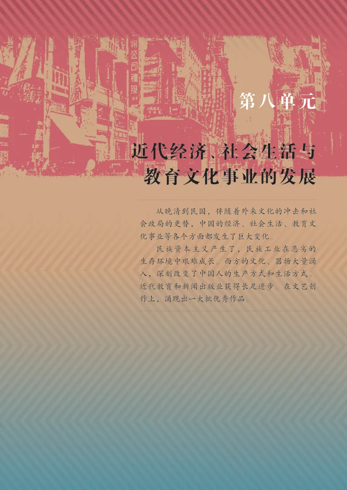
第25课 经济和社会生活的变化
返回正文 ↑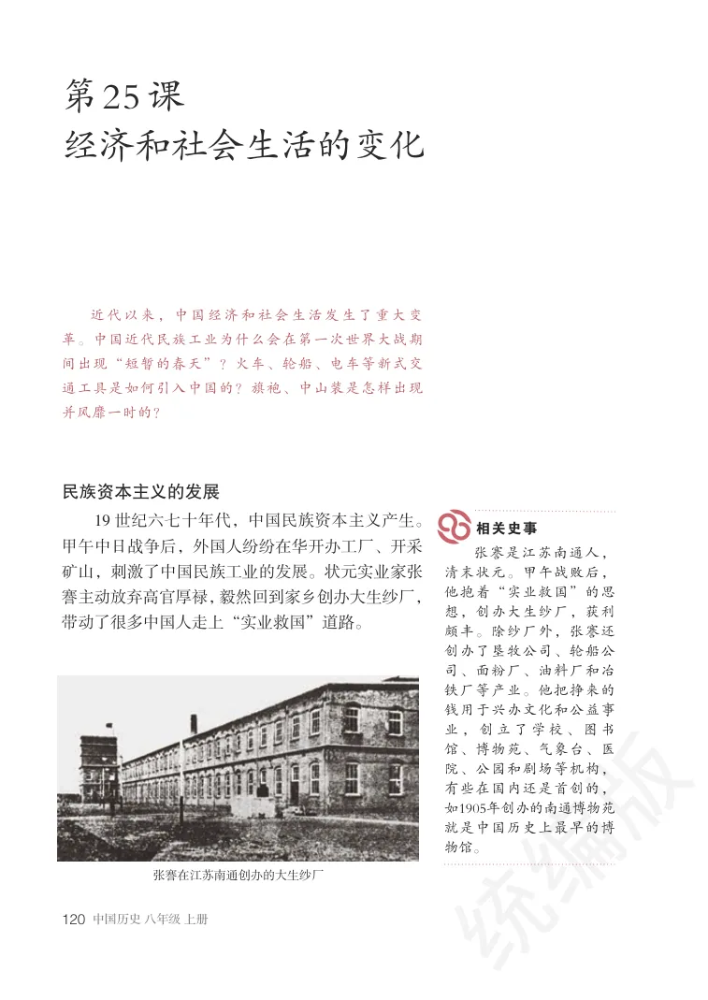
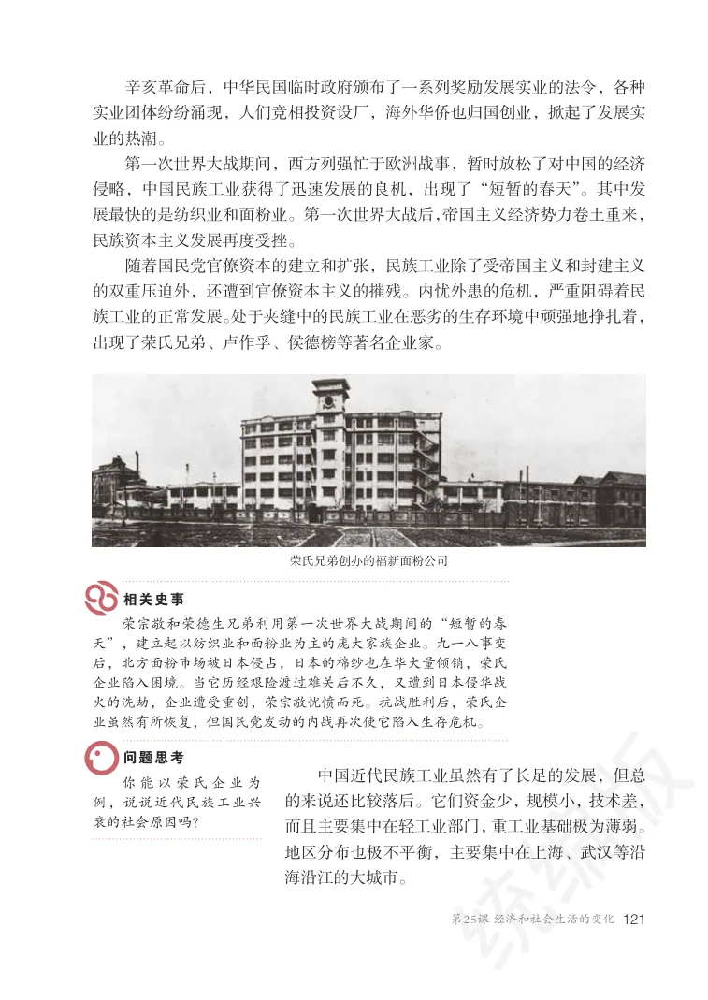
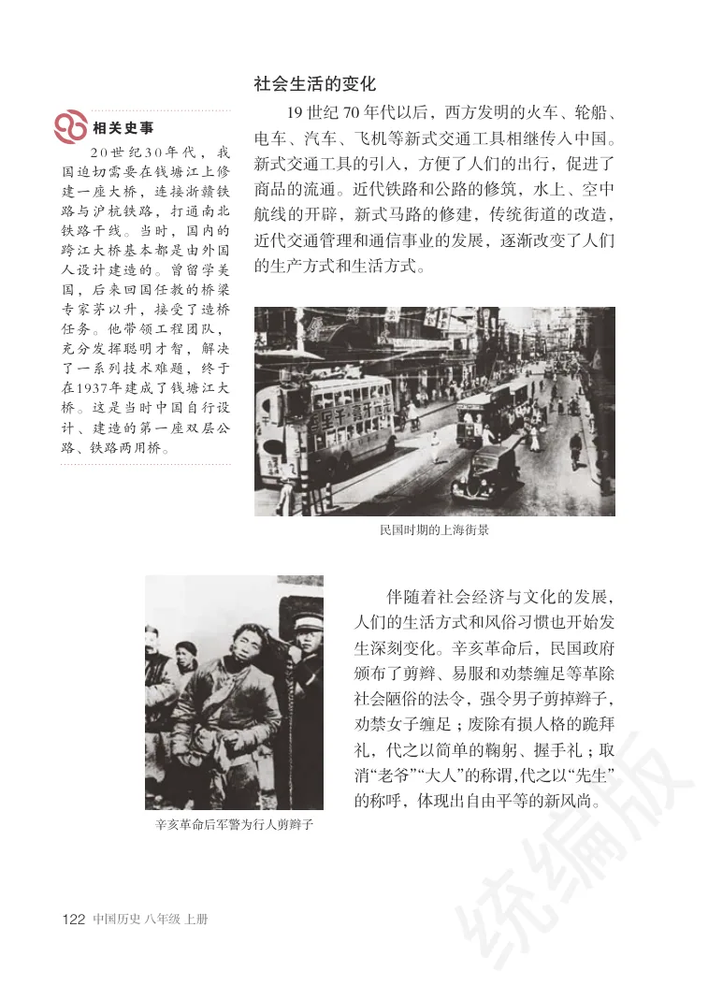
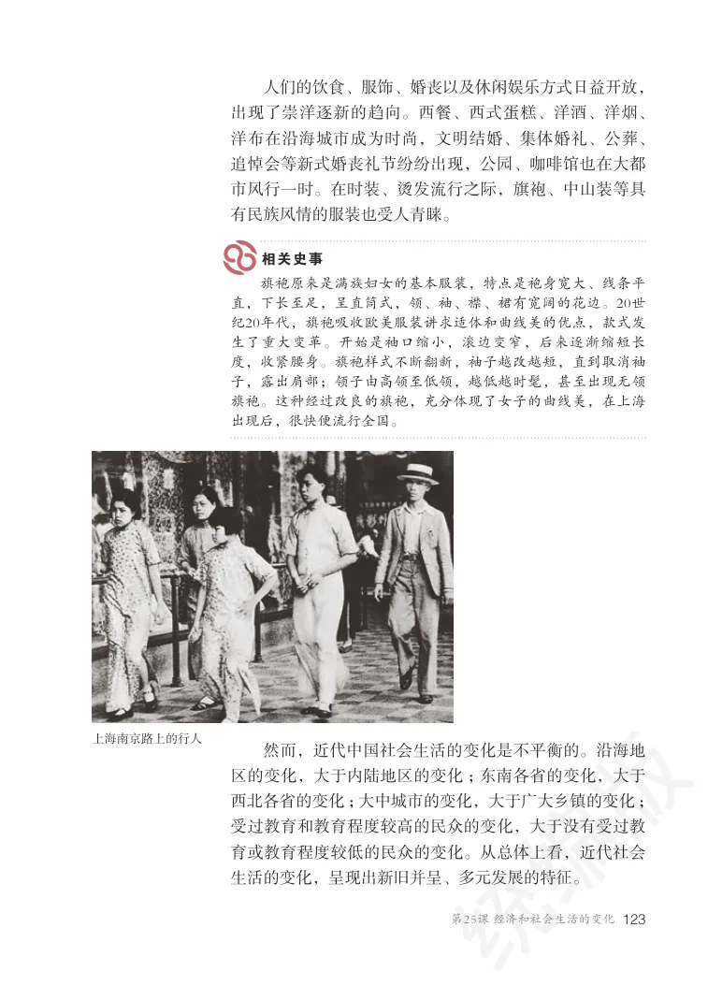
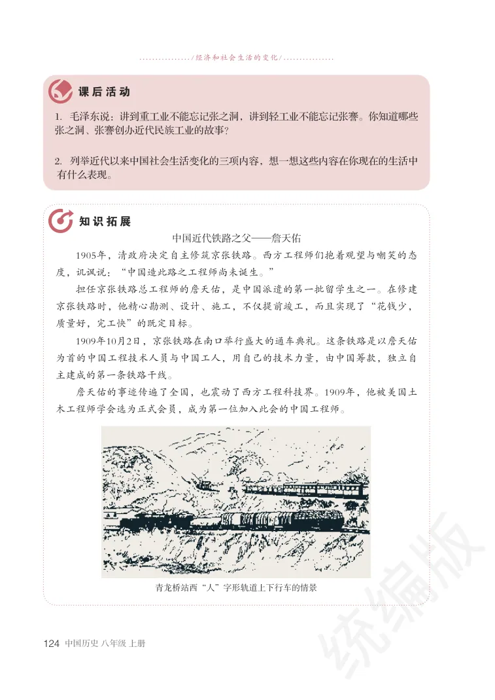
第26课 教育文化事业的发展
返回正文 ↑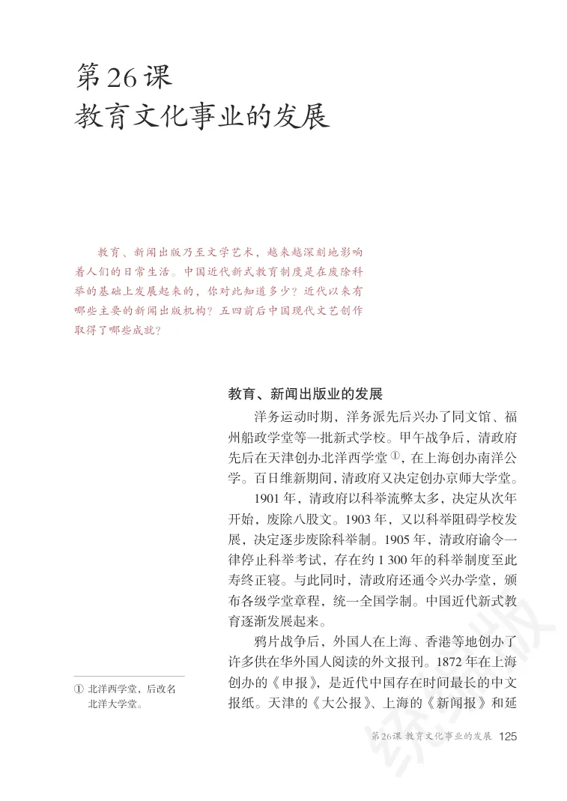
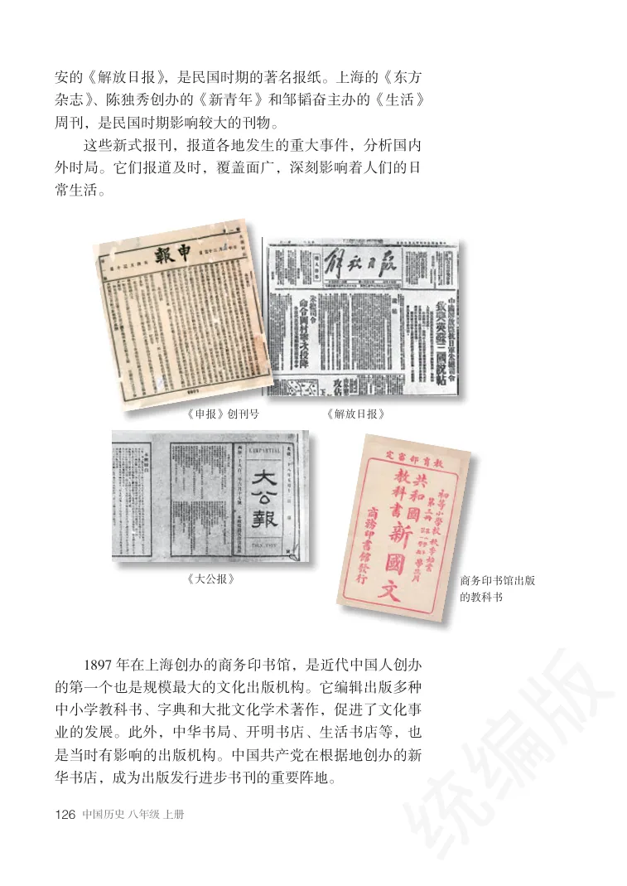
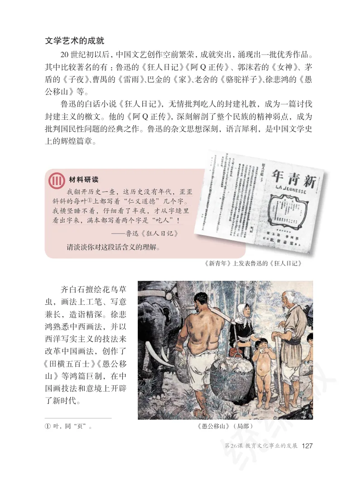
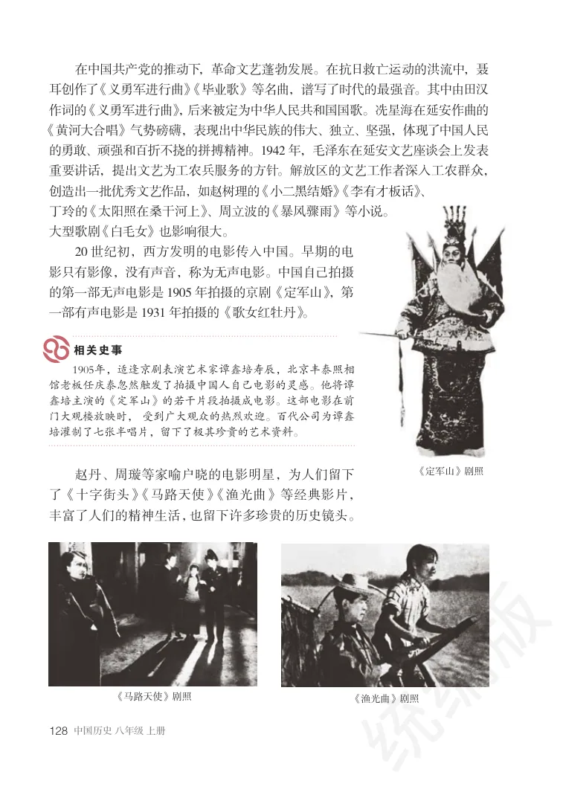
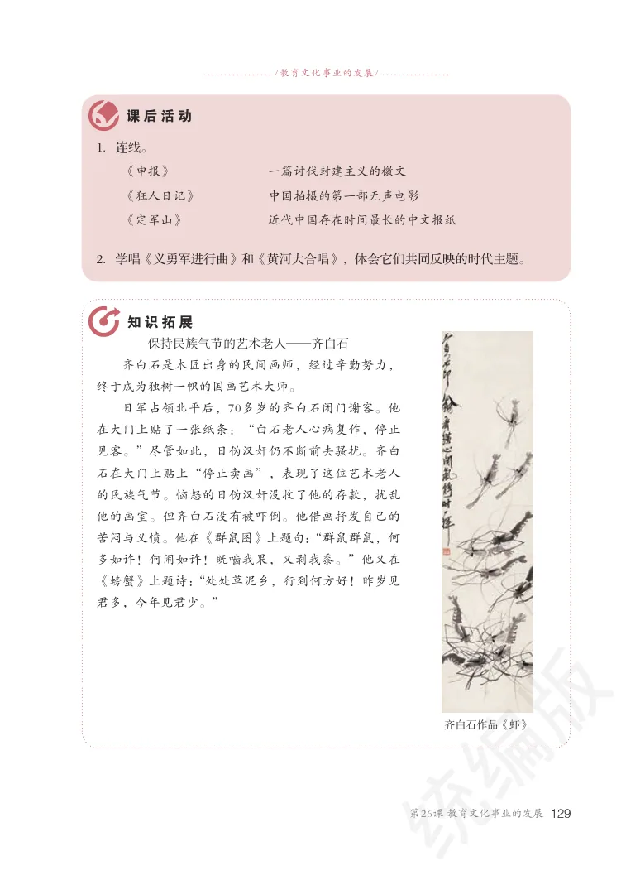
第27课 活动课：考察近代历史遗迹
返回正文 ↑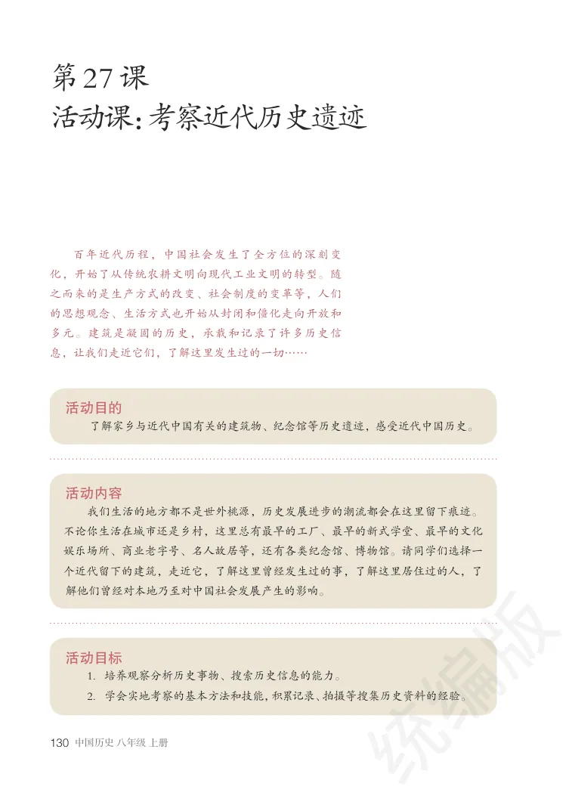
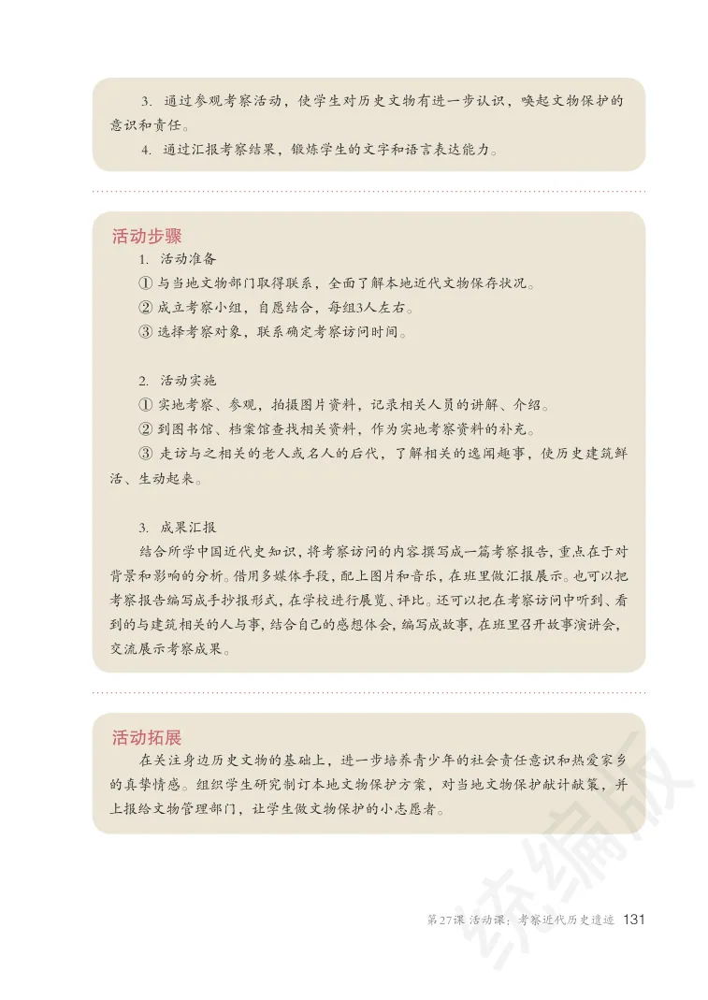
继续使用页眉中的“下一单元”进入后续内容。